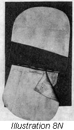

1926—The New-Way Course in Fashionable Clothes-Making
Lesson 33—The Tailored Pocket
The Tailored Pocket
The tailored pocket is used only on tailored clothes. It adds a certain note of smartness, a certain correct finish. But if it is not well made and well finished it mars the appearance of the garment instead of adding to it.
Although it is not exactly difficult to make tailored pockets, the work requires the mastery of a great deal of detail. This detail may at first seem difficult and intricate to you, but by practicing on odd pieces of material you will have no difficulty in learning to make perfect pockets. Practice each type of pocket over and over again, until you have mastered it and are able to make it without referring to the printed pages of the lesson.
Everyone likes pockets in a garment. They are convenient, of course, and they also serve as smart trimming. In order to achieve a smart and attractive trimming effect, though, it is necessary to study the requirements of certain figures and certain garments. Where one pocket adds just the right note of trimming, another may jar badly out of place.
The simples of all pockets is the Patch pocket which is used on the simplest garments and on wash skirts. The Stand or Flag pocket is used on garments that are strictly tailored throughout. The Bound pocket is used on wash garments and on braid-trimmed clothing. The Slash pocket is used on tailored garments either light or heavy in weight. It is used extensively on tailored suits.
A pocket line is a short line. But it can very easily break a long line and so spoil the lines of a dress or suit. The line of the pocket must be at just the correct angle and in just the correct position; otherwise it is likely to mark the appearance of the garment. If you are stout, do not use a pocket with a line running horizontally as this breaks the long lines of the garment; use instead a pocket which runs vertically and seams to add length to the garment. For the same reason, patch pockets should be avoided by the stout person as they, too, always seem to add size. The stand or flap pocket may be used both by stout and thin people alike, providing the line of the pocket is placed at the proper angle to give the proper line to the garment.
The Patch Pocket
Now let us study the making of each kind of pocket individually. In your experiences as a clothes-maker, you will find many opportunities to use tailored pockets of every kind—on skirts, dresses, suits, children's clothes. You will find that fashion constantly reverts to the patch pocket and insists upon reviving it with each new season. But in order to be attractive, the patch pocket must be well made and well placed on the garment.
Pockets are usually used in pairs. Their position should always be marked very carefully on both sides of the garment and care must be taken to have these two positions match perfectly. Uneven pockets will spoil the prettiest garment.
Patch pockets are used a great deal on sport clothes. They are also used on wash skirts and children's clothes. It is the simplest tailored pocket of all to make—being merely shaped properly, finished and "patched" in place. The size and position depend upon the prevailing mode and upon the type of garment and figure. On some people pockets look better a trifle lower or higher than the usual place.
It is not necessary to detail the making of the patch pocket as you have already made one for your apron. Besides, the making of this pocket is so very simple. But there are many novel and interesting trimming effects that can be incorporated into the use of patch pockets as a trimming—effects carried out in braid, binding or embroidery. Study the patch pockets you see on ready-to-wear garments; notice the pockets on pictures of fashionable clothes in the fashion magazines—and carry out these ideas in making patch pockets for your own clothes.
The Welt or Slash Pocket (Illustrations 33-1, 2, 3 and 4)
Here is a pocket that is more difficult to make—but the trouble is surely worth while for when you have learned to make this smart pocket you will be able to use it on some of the prettiest clothes you make. It is decidedly an attractive pocket and most appropriate for use on tailored clothes.
- Mark the position and length of the pockets on the right side of the garment. For this marking you may use either tailor's chalk or colored basting thread.
- On the wrong side baste a piece of material (muslin or cambric) as a stay. Be sure that the lengthwise thread of the stay is parallel to the pocket slash. The material you use for the stay should be about two and one-half inches wide and an inch and a half longer than the pocket slash is to be. Illustration 33-1, Fig. A.
- Mark the exact outline of the pocket on the stay, using fine basting stitches. Sew right through both thicknesses, so that the marking is visible both on the wrong and right sides of the garment.
- Cut a piece of the garment material two inches wider than the pocket slash, and about five inches long. Matching the grain of the material and garment, place this piece of material over the marked opening on the right side of the garment, the right side of this piece to the right side of the garment.
- Now place the garment under the presser foot of the machine. The right side should be toward the feed. Stitch around the marked pocket.
- Stitch one-eighth of an inch from the marked line, turning square corners at the ends as shown in Illustration 33-1, Fig. B.
- Proceed now to cut the slash exactly on the marked line to a point within one-fourth inch from the end. From this point make a diagonal cut to each corner as shown in Illustration 33-1. Extreme care should be used in making this cut, as the seam allowance is very small and a slight mistake may spoil the pocket.
- Turn the facing through the wrong side and baste along the turning. Illustration 33-2, Fig. C. Allow the facing material to show above the seam so that the welts formed will fill the entire space. Hold the seam back so that it will be caught with the stitching and does not come in the welt-edge. Baste these edges together with diagonal basting so the pocket cannot get out of shape while you are finishing it.
- As shown in Illustration 33-2, Fig. D, stitch very closely and evenly along the lower edge of the pocket. This stitching must be on the garment and not on the welt. Be sure that the ends of the stitching threads are fastened securely.
- You are now ready to add the pouch to the inside of the pocket slash. What you have just made was the important part of the pocket, the visible part, the trimming part. What you are going to make now is the actual pocket—the useful part. Cut the pouch from substantial material, heavy lining material preferably. Cut two pieces about one inch wider than the length of the pocket slash and about four inches long. At the top of one piece stitch a piece of the garment cloth two and one-half inches one way and as wide as the pocket is the other. This is to be the facing back of the pocket opening.
- The other piece of the pocket pouch is stitched now to the lower edge of the slash facing. Illustration 33-3, Fig. E, indicates the method of doing this. The seam should be oversewed.
- Having accomplished this, you are now ready to place the piece of the pouch to which the material is sewed directly over the pocket, the right side of the piece down. Baste in place and turn the garment to the right side. Stitch through the garment and this part of the pocket pouch along the upper lines and ends of the pocket. This stitching should match the stitching on the lower edge of the pocket.
 Now stitch the edges of the pouch together and oversew this seam as shown in Illustration 33-4.
Now stitch the edges of the pouch together and oversew this seam as shown in Illustration 33-4. - To finish, add a crow's foot or arrowhead to each end of the pocket as taught in the lesson on buttonholes. (Lesson 14.) Bar ends may be used if preferred.

If you have followed these directions carefully, carrying them out on an odd piece of material, you now have a perfectly-made, smart, tailored slash pocket. Illustration 33-3, Fig. F. You will notice how neat and well-finished its appearance is (if it is correctly made, of course!) and what a fine finish it will add to tailored coats or suits or dresses. Practice making this type of pocket until you are able to make it without a flaw, and then proceed to the bound pocket. But bear in mind that the completed pocket must be well-pressed when the garment is complete and the bastings which hold the edges together removed.
The Bound Pocket
The bound pocket is extremely pretty as a trimming, when it is made correctly. It is a slash pocket, the edges of which are bound with military braid. To make, proceed in the following manner.
- Mark the position of the slash on the right side of the garment using tailor's chalk or colored basting. If you mark with basting, be sure to take very small, even stitches. The mark must be exactly the pocket length.
- As in the slash pocket, place the stay piece back of the mark line with the lengthwise line of the material used as a stay on the pocket line.
- Determine at this point exactly the width you want the binding to be on the right side of the garment. Mark this line on both sides of the pocket line.
- Now cut two pieces of braid each about two inches longer than the pocket slash is to be.
- With very fine basting stitches, baste one edge of this braid along the lines that mark the width of the binding on the right side of the material.
- Slash the pockets to within one-quarter of an inch of the ends of the slash mark. As in the previous pocket, make a diagonal cut from this point to each corner of the opening. Use great care in making this slash.
- Proceed now with the making of the pouch portion of the pocket. As in the making of the slash pocket, use a piece of the garment material as a facing stitching it to the upper portion of the pouch.
- Turn the garment to the wrong side and baste the plain part of the pocket pouch to the lower edge of the slash, being sure that the edges are perfectly matched.
- Turn the loose edge of the braid over this and baste it down carefully.
- The braid which is to bind the upper edge of the pocket should now be basted down to the material on the wrong side of the garment. When this is completed, the edges of the pocket should be basted together.
- Once again, turn the garment to the right side. Turn the triangular ends under carefully and just as carefully baste them down. This is one of the most important points in the bound pocket construction and the work must be done neatly and carefully. The lines at the ends must be absolutely straight and the corners square and even. Otherwise the pocket will not look well when finished—and certainly not give good service.
- Stitch along the lower edge of the braid, fastening the ends of the stitching threads very firmly. This stitching holds the braid and the edge of the pouch to the lower pocket edge.
- The garment must once again be turned to the wrong side and the faced pocket basted to the upper edge of the pocket slash. It should be laid flat against the garment over the braid and placed high enough so that it is caught firmly by the stitching which is made at the upper edge of the braid.
- Turn the garment to the right side and stitch across the top of the braid which binds the upper edge of the pocket. This stitching will be through the braid and the garment and the faced part of the pocket slash.
- Fasten the ends of the thread firmly.
- The turned edge of the material should be neatly and securely fastened across the ends of the pocket to the braid.
- The edges of the pocket pouch are stitched together in a plain seam and the edges oversewed.
- Your pocket is now finished. Press carefully.
You will find that there are many uses for the tailored bound pocket. When well-made it is most effective as a trimming, especially when the braid is in a contrasting color. On dark-colored tailored dresses or suits, this pocket is very smart when bound in black military braid. The next time you are in one of the shops, notice the bound pockets on the garments you see—and notice how you can improve upon them when you make them yourself.
The Stand Pocket (Illustrations 33-5, 6 and 7)
The stand pocket varies in size according to its position on the garment. When used for a breast pocket, the size is usually three and one-half inches long by one inch high—but when used elsewhere the pocket is usually very much larger. For an excellent example of the stand pocket notice the breast pocket of a man's coat.
In making the stand pocket, proceed with the first steps exactly as you would for the slash or bound pocket. The first steps in the making of almost all pockets are very similar.
- Mark the position of the pocket with tailor's chalk or even basting. This marking, you remember, is done on the right side of the material.
- Place the stay piece back of the line exactly as you did when making the slash pocket.
- Similarly, mark the exact line to be slashed on the stay piece—using basting to indicate the line.
- You must now cut the pattern for the stand. Simply place a small square of cambric or muslin (about 5 inches square) over the right side of the marked pocket line. Be sure that the grain in this material runs in exactly the same direction as the grain in the garment. Mark the pocket slash exactly as it was marked on the stay piece in the two previous pockets.
- Make lines on the cambric extending one inch straight above the ends of the pocket slash. Illustration 33-5, Fig. H, shows these marks. The short lines indicate the ends of the pocket slash.
- Between these marks draw a straight line. Illustration 33-5, Fig H. You now have the pattern for the stand, marked off by the lines. The corners may be round or left square.
- Take this pattern you have just made and place it on the material, being sure that the grains of both materials match. If the garment material is striped be sure that the stripes in the garment and the stand match exactly. Illustration 33-5, Fig. G.
- On the right side of the material, and with tailor's chalk or basting, mark all around the pattern. Cut out, allowing three-eighths of an inch at the ends and on top, and one-half an inch on the lower edge, for finishing.
- Cut the number of these needed, of the material and be sure they are in pairs if the pockets are on opposite sides. They will be in pairs, if one is cut and the right side of this placed on the right side of the material and used for the pattern of the second one, making grain and stripes match perfectly.
- The stand should be cut of canvas exactly like the pattern. But one-half inch must be allowed at the lower edge.
- Baste the material and canvas together, placing the wrong side of the material against the canvas and having the lower edges even.
- Now turn the edge of the material over the canvas along the upper edge and baste the ends together firmly. Illustration 33-6, Fig. 1.
- Stitch around these turned edges to match any other stitching that may be on the garment.
- Cut a facing the exact same size. Illustration 33-6, Fig. J.
- The wrong side of this facing should be placed against the wrong side of the stand, and the edges turned under. This turned edge should be at least one-quarter of an inch from the edge of the stand. Hem down carefully, taking very small stitches.
- The stand should now be pinned to the marked pocket with the stand in exactly the position it will be when finished. This will enable you to see if the edges match perfectly and if the stand is made correctly.
- If you find that the stand matches, remove the pins and proceed to match the marked line on the garment with the marked line on the stand. Place the right sides together, with the upper part of the stand downward, and baste in place.
- The pouch part of the pocket must now be prepared. Take two pieces of material about five inches square and lay the right sides together. The top of the pocket should be cut to slant so that when the pocket is sewed to the slash the lower edge of the pocket will hang straight and even. Round the corners at the bottom. This will make the pocket pouch wider than the pocket slash.
- Now baste one piece of the pocket pouch over the pocket stand, the right side of the pouch to the right side of the garment. The line of stitching is to be marked the exact length of the pocket slash and the exact line at the bottom of the stand.
- Baste the other portion of the pocket pouch to the other side of the marked slash, allowing a space of one-half inch between the bastings of both pieces. Do this very carefully as this seam allowance is important and without it the pocket is spoiled completely.
- Proceed with the stitching. The pouch and the stand are stitched together, right through the basting, beginning at one end of the stand and ending the stitching at the other end. On the upper side of the pocket, stitch the pouch portion to the garment, beginning one-half inch inside the marked line and ending the stitching one-half inch from the other end of this mark.
- Complete the stitching to your entire satisfaction before proceeding to the next step which consists in turning the edges of the seams away from each other and exposing the garment beneath. With sharp scissors, cut the slash exactly in the center between the two lines of stitching to within one-fourth of an inch of each end of the stand. From this point make a diagonal cut to each corner. This cut is made exactly as shown in Illustration 33-1 in lesson on slash pocket.
- The seam at lower edge of the stand should be basted to the garment, being careful that the lower portion of the pocket is not caught with the basting.
- See that the triangular corners at either end of the pocket are sewed to the pouch. This is the next step to be taken. Do it carefully and with a regard for neatness.
- Being sure that both pocket and stand are perfectly smooth and even, baste the stand in its proper position.
- Turn the garment to the wrong side and with a neat cross stitch (Lesson 3) fasten the stand to the garment. See Illustration 33-7, Fig. K. Be careful that these stitches do not show on the right side.
- Your pocket is now almost finished. Baste and stitch a plain seam around the edges of the pouch and oversew firmly. You should have a perfect stand pocket. Place a press cloth over the right side of the pocket and press firmly. Be sure that all bastings are removed. Illustration 33-7, Fig L, shows the right side of the finished pocket.
If you have followed the directions for the stand pocket carefully, not leaving one step until the one before was thoroughly mastered, you should now be able to make this type of pocket without trouble or time-waste.
The stand pocket is smart-looking. It is convenient and quite practical. You will find many occasions for its use. Practice until you can follow the steps quickly and easily.
The Flap Pocket (Illustrations 33-8 and 9)
In the stand pocket, the flap extends upward over the pocket opening. In the flap pocket it is exactly the opposite. The flap drops down over the pocket opening and conceals it.
The details of construction in both stand and flap pockets are very similar. But as there are a few slight changes, we will give the entire construction in steps, so that there will be no confusion.
- Mark the position of the pocket on the right side of the garment, using tailor's chalk or basting.
- Baste the stay piece back of the marked slash, using cambric or muslin. Watch the grains in both materials to be sure that they match. The grain of the stay piece should also match the line marked for the slash. This is done in exactly the same way as for the slash or welt pocket.
- Mark the exact pocket line on this stay piece, on the wrong side of the garment. Basting may be used for the marking.
- Cut a flap pattern in the same way as the stand pattern was cut. Of course, in this case you allow the pattern to extend below the pocket slash instead of above and the dimensions of the flap should be the exact length of the pocket and from two and one-quarter to two and three-quarters inches wide.
- In cutting the flap, cut one thickness of material and one of interlining and one of the lining to be used. This lining should be of silk to harmonize with the material, or it should be of the same lining as that used in the garment. The interlining should be of cambric or muslin. Allow three-eighths of an inch for seams on the edges, and at the top allow one-half inch for attaching the flap to the pocket.
- Proceed to make the flap. Lay the garment material and the lining with the right sides together, and over them place the interlining. Stitch around the edges where you have left three-eighths of an inch for a seam and make a plain seam three-eighths of an inch wide. Turn this through so the right side of the lining, and the garment material, are outside. Baste firmly around the edge to obtain an even edge.
- Stitch around this edge, using stitching to match that used elsewhere on the garment.
- Baste the flap to the pocket line. The mark made one-half inch from the upper edge of the flap should exactly meet the pocket slash line. The right sides of the garment and the flap should be together, and the finished edge of the flap should extend upward. Illustration 33-8, Fig. M.
- Now prepare the pouch. Cut the pouch material one and one-half inches wider than the pocket slash, and face on side with the garment material. This facing should extend down about two inches from the top of the pouch.
- The plain portion of the pouch should be basted to the right side of the garment. See that the upper seam line comes exactly at the stitching line of the flap and pocket slash. Illustration 33-8, Fig. M.
- Baste the faced piece of the pocket pouch to the other edge of the pocket slash, the right side of the pouch to the right side of the garment.
- Having basted these parts in position, stitch the flap and the pouch to the garment, the line of stitching exactly on the marked slash line. This stitching should be the full length of the pocket slash.
- Make a stitching one-half inch from the first line of stitching. The second line of stitching should hold the other piece of the pouch to the garment. It is important that these stitchings be just a half-inch apart.
- Fasten the ends of the threads firmly. Remove all bastings.
- Slip the pocket pouch through to the wrong side of the garment and turn the flap into its proper position. Baste along the upper edge of the pocket, holding the seam upward against the garment.
- The lower portion of the pocket which has the material at the top should now be brought up in a fold high enough to fill the space between the edges beneath the flap. Illustration 33-9, Fig. P. Turn the triangular corners to make a perfect square at end. Sew these ends firmly.
- Stitch across the lower edges as shown in Illustration 33-9, Fig. P, being sure the upper portion of the pocket pouch is turned away form the opening and is not caught by this stitching.
- Fasten the threads at the ends firmly.
- Baste and stitch the pouch portion of the pocket at the edges, using a plain seam. Trim and oversew the edges.
- Remove all bastings and press the pocket thoroughly. Illustration 33-9, Fig. O, shows the right side of the finished pocket.
This completes the lesson on tailored pockets—a lesson which is probably not as fascinating as some of those you have had in earlier lessons, but surely just as important. In your creating of smart, tailored clothes you will find the information that you have learned in this lesson very valuable indeed.
But before you turn on to the next lesson, make sure that you have mastered this one. Test your knowledge of tailored pockets. Get small pieces of material and practice making the different kinds of pockets. Keep on practicing until you have no difficulty in making any pocket you want to—whether it be flap pocket, stand pocket—or any other kind taught in this lesson. And then, to test yourself still further, see if you can determine just what type of dress each type of pocket is best suited for.
Pockets are not merely ornamental. They are meant to be useful. Make your pockets with regard for long wear and faithful service—when turning corners, turn them correctly, when finishing, finish with care. Use staunch lining material for the pouch part, and make each detail the best you are able to. And always remember this—the more pockets you make, the more expert you will become in the making of them!
Introduction to Lesson 33 and Lesson 33
Questions
- What initials should a bride use on her linens?
- On what type of garment is a train suitable?
- From a current magazine or catalog cut a picture of a "tea" frock which would be becoming to a stout matron. Why did you select it?
- What color should never be used for a garden party frock?
- What type of clothes are most suitable to wear to church?
- What kind of garments should be the business woman avoid?
- When is the tailored pocket used?
- If you were advising a stout person about pockets what kind would you suggest that they should avoid?
- In making welt pockets how is the piece of material (that forms the binding) placed?
- How are the ends of the welt pocket finished?
- How much longer than the slash should the braid for a bound pocket be?
- What other pocket does the flap pocket resemble?
Samples of the following should be sent in for inspection in the envelope provided for the purpose. If samples are not correctly done, corrected work will be returned with full explanation. In the case of COMPLETED GARMENTS, the work will be returned to the student for use. Mail your samples with your answers to Quiz Questions and be sure to put name and address and student number on the outside of the envelope. Don't make your samples larger than 5 inches long and 3 inches wide.
Homework Problems
- Make a sample of the Stand Pocket and send it in for correction.